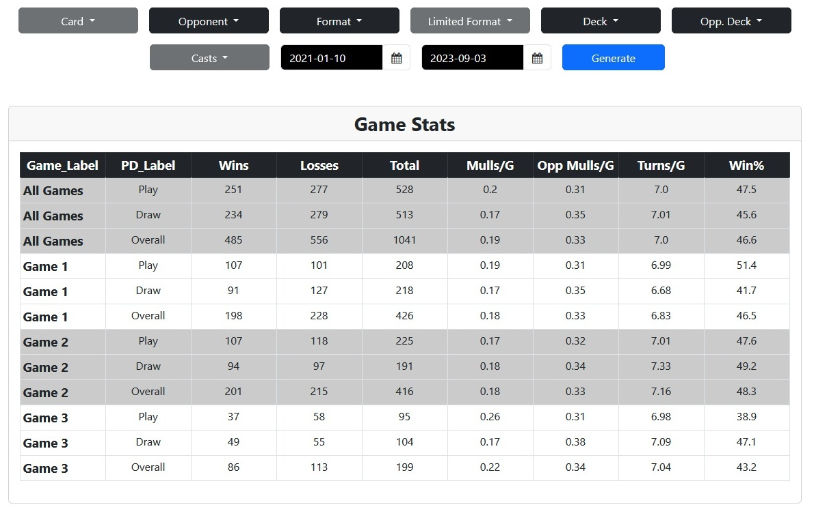

Chris Erickson
Data Systems Engineer • Orange County, CA
Portfolio | GitHub | Tableau | LinkedIn
Education
University of California, Berkeley
MS, Information and Data Science
In Progress
Berkeley, CA

University of Washington, Bothell
BA, Management Information Systems
January 2016
Bothell, WA

Western Washington University
BS, Manufacturing Engineering Technology
CAD/CAM Focus
June 2013
Bellingham, WA
Technical Skills
Programming
Dashboards, Data Visualization
Tools
Production Systems/PLM
Work Experience
Data Systems Engineer | Reliability Maintainability & Data Analytics (RMDA)
The Boeing Company
December 2024 - Present
Seal Beach, CA
Data Systems Engineer | Reliability Data Management (RDM)
The Boeing Company
April 2023 - December 2024
Seal Beach, CA
- Setup, managed, and maintained airline reliability data feeds.
- Analyzed incoming data to ensure it met standards for data integrity and accuracy.
- Communicated both with airlines and internal teams that rely on in-service data.
Manufacturing Engineer | 767/767-2C Tanker Fuel Systems
The Boeing Company
January 2018 - November 2020
Everett, WA
- Maintained and improved build plan architecture for 787 Thrust Reversers and 767 Fuel Systems.
- Incorporated engineering changes and led process improvement projects.
- Provided production support to the build of 777X and 767-2C Tanker Fuel Systems.
- Designed and tested 3d-printed tooling used during assembly and installation.
Manufacturing Engineer | 787 Engines
The Boeing Company
September 2016 - June 2017
Everett, WA
Projects
API.VintageData.IO
GitHub Repository | Project Page
Python (Flask, Pandas), AWS (EC2, RDS), PostgreSQL
- Developed an ETL pipeline to process match results from Vintage Magic: the Gathering Online (MTGO) tournaments.
- Pipeline extracts community-collated data, cleans/transforms it, and loads it into a PostgreSQL database hosted on Amazon RDS.
- Deployed a REST API with Flask on AWS EC2, enabling users to query event and match data.
- Automated weekly data processing and monitoring via cron jobs and API logging.
MTGO-Tracker
GitHub Repository | Project Page
Python (Pandas, tkinter)
- Windows application and analytics tool used to process raw data for MTGO.
- Imports and parses log files created during online play and stores resulting information in a local database for self-analysis.
- Built-in dashboards allow users to make more informed in-game decisions.
- 1600+ total downloads.
MTGO-DB
GitHub Repository | Project Page
Python (Flask, Pandas), MS Azure, PostgreSQL, Bootstrap
- Cloud-based data ingestion tool allowed MTGO players to upload and process raw data files.
- Processed data is loaded and stored in PostgreSQL database and presented to users in the form of dashboards.

×